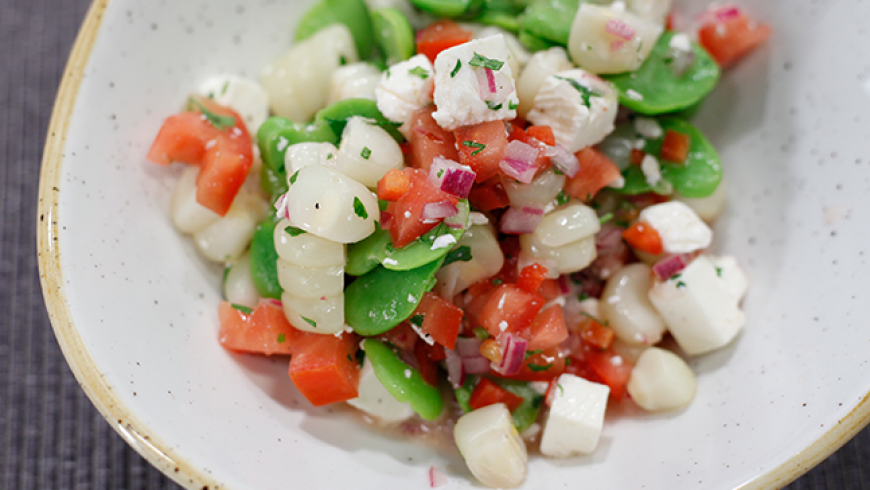

Patrick
Henry
tarea de HTML / CSS
Las carnes asadas son muy comunes en la cocina chino-peruana o chifa, entre ellas destaca la carne de chancho asado. El chancho con tamarindo es uno de los platos agridulces más populares de la comida chifa.
.divClass{ background-color: #f00; }
Arroz chaufa
Soltero de Queso
